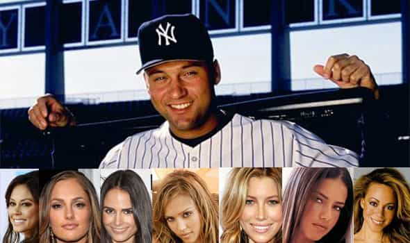
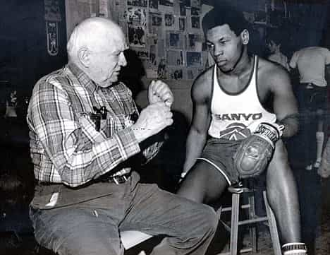

< < < Back
How Professional Athletes Show Us The Importance Of Fathers – Return Of Kings
While the glorification of single motherhood in America continues to pave the way for the destruction of Western Civilization, the importance of fathers is only recently being acknowledged in both the political and social arena. Though this acknowledgement in the media is often a backhanded dig at men (that teen who robbed the liquor store did it because he didn’t have a father at home so it’s a man’s fault!) it is starting to gain respectable traction, albeit much too late.
Numbers never lie
There isn’t enough time in the world to address all of the havoc wreaked by fatherless homes on a macro scale but one need not look any further than professional athletes in the U.S. to see a direct contrast between the men who grew up with fathers, and those who did not. One would think that with all the advantages they have (money, masculinity, status, physical superiority, etc.) they’d automatically all be alphas as we define them in the ‘sphere but nothing could be further from the truth. Looking at the situation involving Mario Williams will make you cringe with embarrassment, shake your head and think to yourself “How the hell did that happen to him?” Sad thing is, there are many more cases like this in all 4 of the major sports leagues in America.
As widespread a problem as this is in the world of sports, there are, however, a precious few athletes that fit the mold of a true alpha. Each of them come from different walks of life but one thing they all have in common is they had strong fathers as examples growing up—a tremendous advantage when it comes to navigating the landscape of wealth, women, and the locker room.
A dissection of six of the most well known American professional athletes world-wide (active or retired) will show how having a strong male presence growing up makes a significant difference in the way their lives on and off the field.
The Haves
Michael Jordan, Tom Brady, Derek Jeter. These names are synonymous with greatness—oh, and they’re pretty damn good on their respective playing fields too. These three men enjoy a global stardom rivaled by few. Between them they have amassed a whopping 14 championships. To be the best in the world at anything for an extended period of while simultaneously thriving outside of your craft takes an alpha approach. The will, the desire, and the killer instinct necessary to attain this level of excellence simply cannot be taught by a woman.
His Airness
James Jordan was a hard working equipment manager from Brooklyn with a rock solid work ethic who moved his family to Wilmington, North Carolina in search of a better life. With the help and support of his wife Deloris, they instilled their children with that same diligent ethos. Their son, Michael, benefited the most from this and became arguably the most famous athlete the world has ever known.

The symbol recognized ’round the world
The Jordan brand and image will be recognized worldwide forever. Anyone who doubts this should go to their local Footlocker and witness the bedlam that ensues when the latest edition of his basketball shoes hits the shelves. Jordan also won 6 NBA Titles in 6 tries and is regarded as the greatest player in the history of the NBA. More than a decade after his retirement he’s still flexing his alpha muscle as he is currently the majority owner of the Charlotte Bobcats, made $90 million last year in endorsements alone and also married her.
Michael Jordan’s work ethic was legendary and his competitive drive was off the charts. It’s said that he was confrontational, uncommonly demanding, and even punched teammates. In retrospect he isn’t as quite as loved as he used to be what with former teammates regaling us with stories of his infamous tirades but he is still revered for his unyielding lust for victory. We recognize a super alpha when we see one and Jordan is just that. This 30 year run of dominance is highly unlikely without the presence of a strong male leader. A leader like his father, James Jordan.
Captain America
On August 8th, 1977 Galynn Brady gave birth to a baby boy named Thomas, after his father. Thomas Brady was a blue collar Catholic who ran a conservative household. With his wife studiously by his side, he raised his son with laser focus and an iron will that would later propel him to superstar status earning him nicknames like “Captain America” and “The Golden Boy”.
Tom Brady is widely regarded as one of the greatest quarterbacks in NFL history and for good reason. He’s won 3 Super Bowls in 5 attempts and has set numerous records along the way. Tom Terrific earns a cool $15 million a year not counting his endless upscale product endorsements, he’s married to International Brazilian supermodel Gisele Bundchen, and lives in a $20 million home surrounded by a moat. Put simply, he’s kicking life’s ass.

Brady simply does not put his name on burger joints
To amass and maintain a life like this takes hard work, perseverance, and a belief in himself that could only have come from the influence of a solid household led by a man who understood the importance of traditional family values.
King Of Gotham City
Dr. Sanderson Charles Jeter is a substance abuse counselor who served in the U.S. Army where he met his wife, Dorothy. Together they provided a strong foundation for their son, Derek, who grew up to become one of the greatest shortstops on the most storied franchises in Major League Baseball history. One of the many rearing methods Dr. Jeter used to mold Derek into the man he is today was making him sign an annual contract that stated what behavior was acceptable, and what behavior was not. This helped pave the way for their son to handle the rigors of being in the spotlight of playing for the New York Yankees.
Derek Jeter has played in 7 World Series and won 5. He’s a first-ballot hall of famer and has amassed enough wealth to last him and his family several lifetimes. Jeter also has a reputation for being a playboy, having dated some of the most beautiful, talented women in the world. Actresses, singers, models, you name ‘em—he’s banged ‘em. However, the most remarkable feat he’s accomplished with his high class harem is that we never hear about any drama or nasty breakups with any of these women… ever.
He is the master of his universe and keeping things under the radar is a skill he’s perfected. His ability to seamlessly float from one hottie to another before the public even realizes who his latest fling is mystifies even the nosiest of NYC gossip magazine reporters. Doing this under the bright lights of New York City is difficult but the Yankee captain makes it look easy. The icing on the cake is that he has no children that we know of (which is no accident). Derek Jeter is a red pill alpha to the core. This is the end result of being raised in a home with a man like Sanderson at the helm.

A small sampling of Derek’s impressive notches
The Have Nots
Alex Rodriguez, Terrell Owens, Mike Tyson. These names are synonymous with—well—a lot of things. Yes, each of these men were considered the very best at what they did at some point and yes, they have all made a shit load of money. But money isn’t everything as the saying goes and these guys are the poster children for this idiom. Having earned more than $705 million (est.) between them has not kept their lives spiraling out of control in public. What’s their common thread? Men like James, Thomas, and Sanderson were nowhere to be found in their lives.
Latin Loser
Alex Rodriguez is one of the most infamous athletes in U.S. history. As recently as 5 years ago this guy was on top of the world. Rodriguez was the highest paid baseball player ever making $27.5 million per season, he was well on his way to breaking the most hallowed record in sports (the career homerun record), and he played for baseball’s most successful franchise, the New York Yankees. His fall from grace after the revelation of his alleged steroid use wasn’t much of a surprise because, believe it or not, A-Rod wasn’t well liked to begin with.
So why was this talented, mega-rich, professional athlete with male model looks disliked by both sexes? A lot of sports fans point to his perceived disingenuousness. Or maybe it’s that teammates and coaches (current and former) have opined about his passive aggressive personality. It’s also believed that Rodriguez surrounds himself with some pretty shady individuals which has provided more than its fair share of public drama. If we combine the aforementioned narrative with the endless anecdotes of his lack of character from people who have spent time with him, we get the answer to this question that’s stared us in the face all along: Alex Rodriguez is a beta. Regardless of how rich or good looking you are, a supplicating persona does not win you genuine favor with the masses. And how does a guy who’s made $325 million in salary become a beta you ask? Take a look:
“Dad left us when I was 9,” Rodriguez said. “What did I know back then? I thought he was coming back. I thought he had gone to the store or something. But he never came back…it still hurts.”
Mystery solved.
T.O.
Terrell Owens will walk into the Hall of Fame as one of the greatest receivers ever to play in the National Football League. His career numbers are only surpassed by the greatest receiver ever, Jerry Rice. But adjectives like “diva” and “drama queen” have been used to describe him and trust me when I tell you he has earned those labels. A quick search on YouTube will reveal the melodramatic circus that has plagued his career since he started gaining notoriety in the late 90s, such as crying like a girl (masculine men cry on television all the time but this was of the feminine nature) during a press conference when reporters attacked a teammate of his for doing sit ups in his driveway to attract attention to himself in the midst of a contract dispute. His life has been one soap opera after another.
It gets better. Not only has he reportedly blown through more than $80 million in career earnings, he has 4 children by 4 different women (no wonder he’s broke) and appeared on Dr. Phil to be emasculated by said baby mamas on national television. No need to speculate on how this physical freak with hall of fame talent got to this point:
Enough said.
Kid Dynamite
Mike Tyson is a man who needs no introduction. Once known as “The Baddest Man On The Planet” Iron Mike became the youngest heavyweight champion in history at the tender age of 20. His vicious, first round knockouts were the stuff of legend and his youth ensured us of many more to come. Tyson did not disappoint. Of his 50 career victories 44 were knockouts, most of which came in spectacular fashion. He was poised to possibly be the pound for pound greatest prize fighter in the history of professional boxing.
But without the guidance of a strong male role model in his life, Tyson’s life was bound for trouble. His father abandoned the family right after he was born leaving the burden of raising him and his siblings squarely on the shoulders of his mother. Mike got a brief reprieve in the form of Cus D’Amato, who took the 13 year old Tyson under his wing, into his home and introduced the troubled teen to boxing. For 6 years Mike had a father figure in his life showing him the ropes in and out of the ring but D’Amato died one year before Tyson won his first title. Although his mentor made a significant impact in his life, the damage from the first 13 years of his upbringing had already been done.

D’Amato mentoring young Tyson
Without the tutelage of D’Amato to guide him through the treacherous waters of fame, Tyson’s life was afflicted by bad decision making and many other problems that eventually lead to his downfall. Signing with Don King (who allegedly stole over $50 million from him), his marriage to Robin Givens, and his rape conviction in 1991 were all pitfalls that could have been avoided had the only father figure in his life had been around for just a bit longer. Most of the public is well aware of the many other self destructive exploits the former champion has involved himself in and thanks to his recently released autobiography, we now know the gruesome details.
Iron Mike is more of a cartoon character than anything else these days but he appears to be doing better for himself. He’s been in a few movies and performs a riveting one man Broadway show that he uses as a platform to give a raw and unfiltered account of his life. But he was forever changed the day his father walked out on his family leaving him and his siblings permanently damaged.
Who would disagree now?
Feminists and egalitarians are always quick to point out the exceptions to the rule as “proof” that fathers are unnecessary. Sure, there are plenty of successful men who were raised by single mothers and good for them for persevering despite a critical disadvantage. But for every LeBron James they squawk about, at least 20 Andrew Lucks can easily be referenced to crush this weak attempt to use the exception as the rule. Feminists also have a knack for highlighting mistakes super alphas have made. Yes, Tom Brady has a kid with another woman and yes, Michael Jordan went through a very expensive and public divorce, but the Golden Boy’s son’s mother is an an accomplished Hollywood actress and Jordan has more than recovered financially and has made a major upgrade in the wife department. Alpha’s aren’t perfect, but they always manage to come out on top in the end.
American professional athletes are a microcosm of the sad state of masculinity in the U.S. Men who have the rare fortune of having a strong paternal influence from boyhood to manhood stand a much better chance to live a life of true dominance.
Read Next: Western Parents Are Raising Boys To Be Failures In Life


{kind=link}
{kind=link}